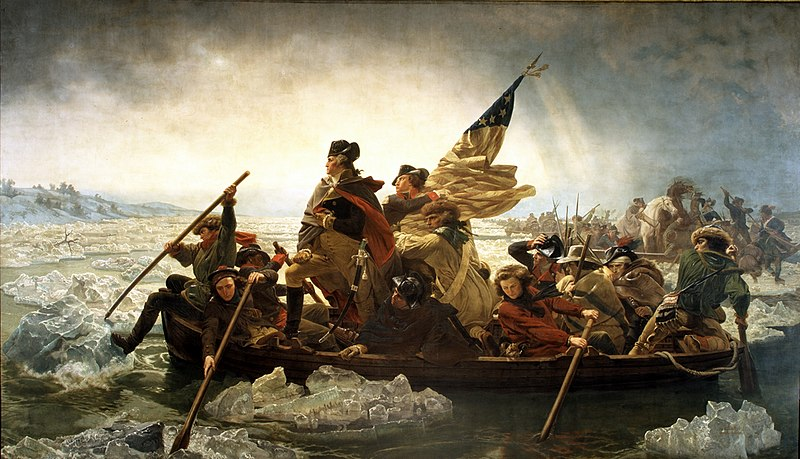

I am a Software Engineering major and I enjoy singing, dancing, and nerding out with my friends.
As per the question, yes, I have thirty four grandchildren but, unfortunately, no children.
I am taking this course because I want to develop skills and talents that will help me obtain future employment.
I've been a member of the Church of Jesus Christ of Latter-dya Saints for 12 years; I was baptized when I was eight.
Two claims to fame; I crossed the Delaware and landed on the moon. I'm the one in the hat in the first picture and the blue and red one in the second.
